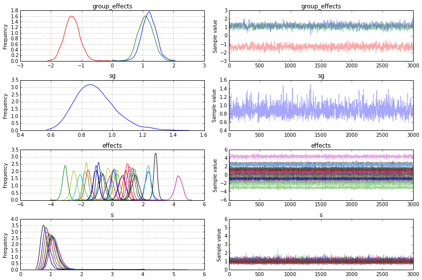

%pylab --no-import-all inline
from pymc3 import *
import theano.tensor as T
from numpy import random, sum as nsum, ones, concatenate, newaxis, dot, arange
import numpy as np
random.seed(1)
n_groups = 1
no_pergroup = 30
n_observed = no_pergroup * n_groups
n_group_predictors = 1
n_predictors = 3
group = concatenate([[i] * no_pergroup for i in range(n_groups)])
group_predictors = random.normal(size=(n_groups, n_group_predictors)) # random.normal(size = (n_groups, n_group_predictors))
predictors = random.normal(size=(n_observed, n_predictors))
group_effects_a = random.normal(size=(n_group_predictors, n_predictors))
effects_a = random.normal(
size=(n_groups, n_predictors)) + dot(group_predictors, group_effects_a)
y = nsum(
effects_a[group, :] * predictors, 1) + random.normal(size=(n_observed))
model = Model()
with model:
# m_g ~ N(0, .1)
group_effects = Normal(
"group_effects", 0, .1, shape=(1, n_group_predictors, n_predictors))
# sg ~ Uniform(.05, 10)
sg = Uniform("sg", .0, 10, testval=2.)
# m ~ N(mg * pg, sg)
effects = Normal("effects",
sum(group_predictors[:, :, newaxis] *
group_effects, 1), sg ** -2,
shape=(n_groups, n_predictors))
s = Uniform("s", .01, 10, shape=n_groups)
g = T.constant(group)
# y ~ Normal(m[g] * p, s)
yd = Normal('y', sum(effects[g] * predictors, 1), s[g] ** -2, observed=y)
#start = find_MAP()
#h = find_hessian(start)
#step = Metropolis()
#step = Slice()
step = NUTS()
Populating the interactive namespace from numpy and matplotlib
n_predictors
3
group
array([0, 0, 0, 0, 0, 0, 0, 0, 0, 0, 0, 0, 0, 0, 0, 0, 0, 0, 0, 0, 0, 0, 0,
0, 0, 0, 0, 0, 0, 0])
n_groups
1
import pymc3 as pm
pm.debug.eval_univariate?
model.free_RVs
[group_effects, sg, effects, s]
lp = lambda x, y: model.logp({'group_effects': [[[0, 0, 0]]], 'sg': x, 'effects':[[y, y, y]], 's': [.05]})
lp = np.vectorize(lp)
import seaborn as sns
x, y = np.mgrid[0.001:0.1:.001, -.05:.05:.001]
plt.contourf(x, y, lp(x, y))
<matplotlib.contour.QuadContourSet instance at 0x7ffe77d0ccf8>

best of 3: 6.94 s per loop
%prun -q -D sample_nuts.prof sample(3e3, step, model=model)
[-----------------100%-----------------] 3000 of 3000 complete in 74.1 sec
*** Profile stats marshalled to file u'sample_nuts.prof'.
%prun -q -D sample.prof sample(3e3, step, start, model=model)
[-----------------100%-----------------] 3000 of 3000 complete in 80.0 sec
*** Profile stats marshalled to file u'sample.prof'.
traceplot(trace);
